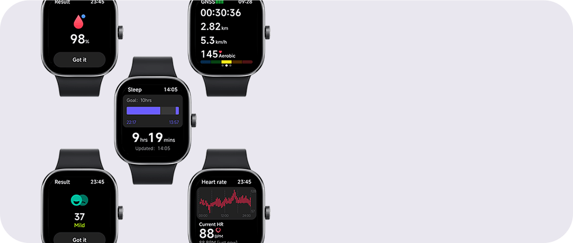
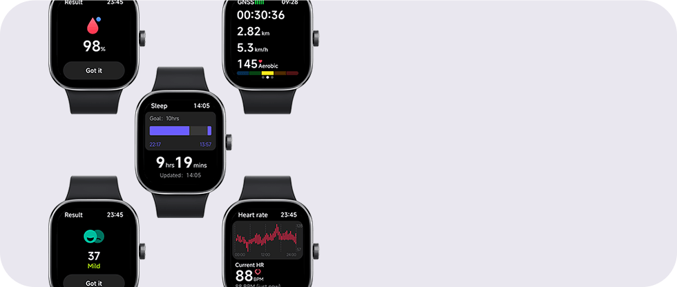
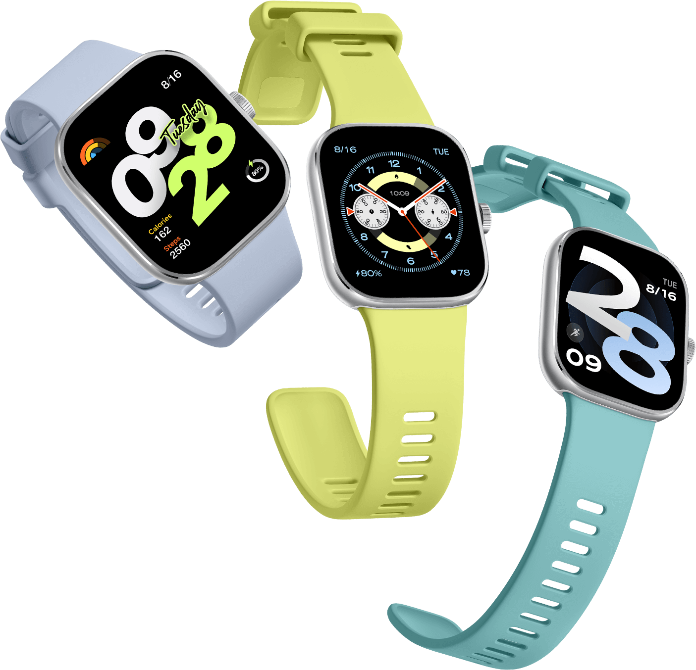

Mais para ver, muito para amar

 

Tela AMOLED de 1,97"
A maior tela já vista em um Redmi Watch

TPS 5Hz | Taxa de atualização alta de 60Hz de | Até 600 nits de brilho
A maior tela já vista em um Redmi Watch, com um aumento de 26% na área de exibição*. Combinado com a taxa de atualização alta de 60Hz, entrega fluidez incomparável.
Moldura de liga de alumínio
Duas cores clássicas
A coroa giratória de aço inoxidável adiciona um toque de alta qualidade até mesmo aos menores detalhes e seu giro suave proporciona uma experiência mais confortável.
Encaixe de liberação rápida totalmente novo
Troque de pulseira facilmente

O encaixe de liberação rápida aprimorado facilita a substituição da pulseira. Diversas opções de pulseiras* para que você mude seu estilo num instante.
+200 estilosos mostradores de relógio.
Expresse sua individualidade.
Descubra uma variedade de mostradores de relógio únicos e personalizáveis, o estilo e a funcionalidade estão ao seu dispor.
Vida útil da bateria de até 20 dias
Smartwatch de longa duração
Equipado com uma bateria de longa duração e um chip para eficiência energética que otimiza a vida útil da bateria em até 20 dias em uso*. O cabo de carregamento magnético permite que você recarregue com um simples toque, para usar o smartwatch sem preocupações em diversos modos:
10 dias
Tela sempre ativa
30 dias
Economia de bateria
20 dias
Uso padrão*
-25%*
Consumo energético
Chamada telefônica Bluetooth®
Levante o pulso para se comunicar
O Redmi Watch 4 se conecta ao seu smartphone via Bluetooth, permitindo que você veja e rejeite chamadas no seu relógio e participe de conversas com o microfone e alto-falante embutidos, sem a necessidade de tirar seu smartphone do bolso.
Monitoramento preciso
com sensor PPG de 4 canais
Maior precisão de monitoramento
A configuração do sensor PPG* foi atualizada para incluir 4 canais para ajudar a aumentar a precisão do monitoramento de saúde.
Monitoramento inteligente do sono
Com a ajuda de tecnologias científicas e meticulosas de monitoramento do sono, o relógio registra sua condição de sono em tempo real em diferentes estágios, como sono profundo, sono leve e REM, melhorando seus hábitos de sono e qualidade.
Monitoramento de saúde completo
Seu guardião de pulso
+ 150 modos esportivos
Todas as atividades que você ama
Uma ampla variedade de modos de esporte, incluindo corrida ao ar livre e interna, caminhada, ciclismo e muito mais. Antes do seu exercício, você pode aquecer* seguindo as imagens de movimento de um treinador virtual e adotar a postura correta para ajudar a evitar lesões.
Posicionamento por satélite independente
Monitore sua rota de exercícios a qualquer momento


Equipado com um chip de localização GNSS, funciona em conjunto com seu smartphone ou de forma autônoma. Cinco sistemas de posicionamento por satélite são suportados para rastrear seus passos com precisão.
5ATM
Resistência à água aprimorada
Com resistência à água 5ATM*, é adequado para 18 esportes aquáticos, permitindo que você aproveite seu tempo na água com facilidade. A função de expelir água automática oferece a máxima conveniência.
Aplicativo Mi Fitness
Dados diários de saúde na ponta dos seus dedos
Estatísticas diárias de saúde, como frequência cardíaca, condicionamento e sono, são apresentados em detalhe para fornecer uma informação clara da sua saúde. A sincronização dos dados com o Strava e o Apple Health é fácil e conveniente.
*Os dispositivos não podem ser diretamente vinculados ao aplicativo Strava ou ao Apple Health.
Segurança 24 horas
Em caso de emergências, pressione o botão da coroa três vezes rapidamente para alertar seu contato de emergência*. Sua segurança é sempre a maior prioridade.

Avisos legais:
*Os dados da autonomia da bateria se baseiam no modo de uso típico, testados pelos laboratórios internos da Xiaomi. Os resultados reais podem variar.
*20 dias de condições típicas de teste do modo de uso: Carga completa, configurações padrão de fábrica, discagem estática, com monitoramento do sono de alta precisão, monitoramento da qualidade da respiração durante o sono, monitoramento do estresse durante todo o dia e monitoramento do oxigênio no sangue durante todo o dia desativados. Detecção de frequência cardíaca durante todo o dia a cada 10 minutos e notificações de mensagens (100 mensagens, 2 chamadas e 3 alarmes por dia) ativadas. Pulso elevado para acionar a tela 200 vezes por dia; início manual do aplicativo para sincronizar dados uma vez por dia; 15 minutos de chamadas por Bluetooth toda semana; uso do registro de exercícios por 90 minutos toda semana (GNSS ligado).
*Condições de teste do modo AOD por 10 dias: Carga completa, configurações padrão de fábrica, discagem estática, modo AOD ativado. Monitoramento do sono de alta precisão, monitoramento da qualidade da respiração durante o sono, detecção de estresse durante todo o dia e detecção de oxigênio no sangue durante todo o dia desativados. Detecção de frequência cardíaca durante todo o dia a cada 10 minutos e notificações de mensagens (100 mensagens, 2 chamadas e 3 alarmes por dia) ativadas. Pulso elevado para acionar a tela 200 vezes por dia; início manual do aplicativo para sincronizar dados uma vez por dia; 15 minutos de chamadas por Bluetooth toda semana; uso do registro de exercícios por 90 minutos toda semana (GNSS ligado).
*Condições de teste do modo de bateria com duração de 30 dias: Carga completa, configurações padrão de fábrica, discagem estática. Monitoramento do sono de alta precisão, monitoramento da qualidade da respiração durante o sono, detecção de estresse durante todo o dia, detecção de oxigênio no sangue durante todo o dia, detecção de frequência cardíaca durante todo o dia desligada. Notificações de mensagens (100 mensagens, 1 chamada e 1 alarme por dia), pulso elevado para acionar a tela 20 vezes por dia.
*O relógio deve ser mantido conectado ao Bluetooth do telefone. As chamadas de voz de aplicativos de terceiros não são suportadas no momento.
*Este produto e seus recursos não foram projetados para fins médicos e não se destinam a prever, diagnosticar, prevenir ou curar nenhuma doença.
*Os dados são derivados dos laboratórios internos da Xiaomi e comparados com o Redmi Watch 3. Os resultados podem variar devido a diferenças no equipamento de teste, no ambiente e nos padrões e hábitos de uso individuais. Consulte os dados reais.
*A estrutura em liga de alumínio refere-se à parte da estrutura do corpo do relógio, não ao relógio inteiro.
*O produto vem com uma pulseira em TPU preta ou branca. Pulseiras de outras cores exibidas neste site devem ser adquiridas separadamente.
*Este produto não foi projetado para ser um dispositivo médico, nem se destina a diagnosticar, tratar, curar ou prevenir qualquer doença. Todos os dados e medidas destinam-se apenas para referência pessoal e não devem ser usados como base para diagnóstico e tratamento.
*Depois que o dispositivo for ligado para o monitoramento da frequência cardíaca durante o dia todo, ele fará o monitoramento em uma determinada frequência durante o dia. Para obter mais detalhes sobre a frequência e o princípio de monitoramento, consulte a descrição no APLICATIVO.
*A função de exercício respiratório precisa ser ativada manualmente.
*Precisa ser ativado manualmente pelo usuário para monitorar o status de oxigênio no sangue do usuário. Para obter mais detalhes sobre a frequência e o princípio de monitoramento, consulte a descrição no APLICATIVO.
*A sessão de aquecimento aplica-se apenas aos modos esportivos selecionados.
*A classificação é baseada na norma ISO 22810:2010. O número do relatório do teste é 68.189.23.0305.02. O relógio pode ser usado na piscina, ao nadar perto da costa ou durante outras atividades em águas rasas. Ele não pode ser usado em chuveiros quentes, saunas ou para mergulhar. Evite que o relógio seja impactado diretamente por correntes rápidas durante esportes aquáticos. O nível de resistência à água não é permanente e pode se deteriorar com o tempo.
*Para usar esse recurso, você deve ativá-lo e definir um contato de emergência no aplicativo, e o relógio deve ser mantido conectado ao seu telefone por Bluetooth.
*As imagens e modelos dos produtos, dados, funções, desempenho, especificações, interface do usuário e outras informações do produto presentes nesta página destinam-se apenas para referência e podem ser diferentes do produto real. A Xiaomi pode alterar essas informações. Para obter mais detalhes, consulte o produto real.